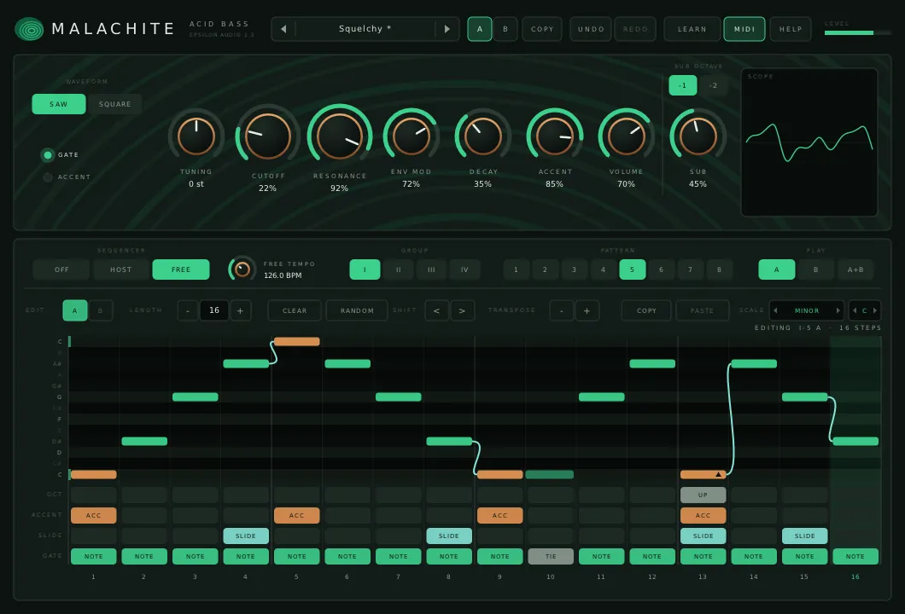

Free · Open source · From Epsilon Records, Amsterdam
Free plugins for producers who make their own sound.
Fifteen instruments and effects for sound design, mixing and electronic music: synths, filters, a tape delay, a reverb, distortion, an EQ and dynamics. Three operating systems, and the source for every line.
Developer? Read the source: MIT-licensed, built on DPF.
15plugins, 3 instruments and 12 effects
628factory presets in total
VST3 · AUplus CLAP everywhere, VST2 on Windows and Linux
3platforms: macOS universal, Windows x64, Linux x64
The catalogue
Pick a specimen
Start from what you want to do. Every plugin is free and comes with factory presets and a manual.
Task links jump to the first matching plugin; all fifteen are listed below.
All fifteen, in release order.

No. 02 · Shape
Caldera v3.1
Multi-filter
Up to four filters with eleven styles, bell, shelf and notch shapes, per-filter drive and delay, 4× oversampling and 50 drag-and-drop modulation slots.
- Presets
- 57 factory
- Formats
- VST3 · AU · CLAP · VST2
- MIDI
- Key tracking, triggered envelopes, MIDI Learn
- Sidechain
- External, with detector filters
- CLAP ID
com.epsilonrecords.caldera


No. 04 · Finish
Strata v3.1
Tape delay
Stereo delay with tape or stretch mode, 15 extra taps per line, six loop filters, lo-fi, diffuse, ducking and pitch-shift effects, freeze and 50 modulation slots.
- Presets
- 60 factory
- Formats
- VST3 · AU · CLAP · VST2
- MIDI
- Key tracking, triggered envelopes, MIDI Learn
- Sidechain
- External, with detector filters
- CLAP ID
com.epsilonrecords.strata


No. 06 · Mix
Gneiss v2.1
Compressor
14 styles plus upward compression, ratio to Inf:1, optional lookahead, up to 32× oversampling, a 6-band sidechain EQ, MIDI triggering and loudness metering.
- Presets
- 46 factory
- Formats
- VST3 · AU · CLAP · VST2
- Sidechain
- External, with detector filters
- CLAP ID
com.epsilonrecords.gneiss


No. 10 · Mix
Slate v2.1
Gate and expander
Gate, expander and ducker with six styles, up to 100:1 and 80 dB range, lookahead, mid/side, sidechain filters and MIDI triggering.
- Presets
- 39 factory
- Formats
- VST3 · AU · CLAP · VST2
- MIDI
- Held notes open the gate
- Sidechain
- External, with detector filters
- CLAP ID
com.epsilonrecords.slate

No. 11 · Distort
Magma v2.1
Multiband distortion
Up to six bands with 28 tube, tape, amp, saturation and FX styles, linear-phase crossovers and 50 drag-and-drop modulation slots with XLFOs, envelopes and XY pads.
- Presets
- 59 factory
- Formats
- VST3 · AU · CLAP · VST2
- MIDI
- Velocity, key, wheel and aftertouch as modulation sources
- Sidechain
- External, into the envelope followers
- CLAP ID
com.epsilonrecords.magma


No. 13 · Mix
Schist v2.1
Multiband dynamics
Up to six freely placed bands that compress or expand, up or down, to Inf:1 for limiting and gating, with dynamic, linear or minimum phase.
- Presets
- 41 factory
- Formats
- VST3 · AU · CLAP · VST2
- Sidechain
- External, per band
- CLAP ID
com.epsilonrecords.schist


No. 15 · Create
Malachite v1.2
Acid bass synth
A squelchy resonant filter with accent, slide and a sub oscillator, driven by a 16-step sequencer with 64 patterns and scales that follows the host tempo.
- Presets
- 22 factory
- Formats
- VST3 · AU · CLAP · VST2
- CLAP ID
com.epsilonrecords.malachite
Download & install
Get them running
Each plugin installs from its own zip today, and one installer for all fifteen is on its way. Then rescan in your DAW; the install guides show where to look.
The collection
Install the plugins
Each plugin has its own zip for macOS, Windows and Linux, below.
Install from the individual zips instead
macOS
Download the macOS 10.13+ (Apple Silicon + Intel) zip
From the plugin's Releases page. It contains:
VST3AUCLAPCopy each format to its folder
Format File Folder VST3 .vst3~/Library/Audio/Plug-Ins/VST3AU .component~/Library/Audio/Plug-Ins/ComponentsCLAP .clap~/Library/Audio/Plug-Ins/CLAPClear the quarantine flag
Plugins copied from a zip are quarantined by macOS until the builds are notarized. Once the collection installer is out it will avoid this step; for zips, one command clears the flag for every Epsilon plugin:
find -E ~/Library/Audio/Plug-Ins -maxdepth 2 -regex '.*/(Monolith|Caldera|Obsidian|Strata|Basalt|Gneiss|Mica|Flint|Granite|Slate|Magma|Talc|Schist|Geode|Malachite)\.(vst3|vst|component|clap)' -exec xattr -dr com.apple.quarantine {} +
Windows
Download the Windows x64 zip
From the plugin's Releases page. It contains:
VST3CLAPVST2Copy each format to its folder
Format File Folder VST3 .vst3 (folder)C:\Program Files\Common Files\VST3\CLAP .clapC:\Program Files\Common Files\CLAP\Rescan in your DAW
Open your DAW's plugin manager and rescan. VST2 builds go in your DAW's VST2 folder.
Linux
Download the Linux x64 zip
From the plugin's Releases page. It contains:
VST3CLAPVST2Copy each format to its folder
Format File Folder VST3 .vst3~/.vst3/CLAP .clap~/.clap/Rescan in your DAW
Open your DAW's plugin manager and rescan. VST2 builds go in your DAW's VST2 folder.
Newsletter
New releases, free plugins, and how they were made
About once a month: new records from the label, plugin releases, presets and track breakdowns from Epsilon Records artists. Unsubscribe in one click.
Subscribing sends your email address to Kit, our newsletter provider, which emails you to confirm.How they fit together
Shared bedrock
Monolith's filter runs through most of the series. Later plugins borrow whole systems from earlier ones, so a sound you learn in one carries into the next.
Monolith
Its 12 dB filter is a style in Caldera, Obsidian, Strata and Basalt (where it's called Fat). Flint is built on it.
Strata
Caldera's filters in the delay's feedback loop, driven by Obsidian's modulation system.
Basalt
Caldera with the modulation removed and the controls enlarged for live use.
Gneiss
The first dynamics plugin: a stereo compressor with sidechain.
Mica
The first mixing EQ.
Flint
A small, CPU-light filter with an envelope follower.
Granite
A look-ahead brickwall limiter with oversampling, dither and true-peak metering.
Slate
A gate and expander with six styles, sidechain filters and MIDI triggering.
Magma
Multiband distortion with 28 styles and a drag-and-drop modulation system.
Talc
A de-esser with single-vocal detection, linear-phase split-band processing and a sibilance display.
Schist
A multiband compressor and expander with freely placed bands and three phase modes.
Geode
An algorithmic reverb with a stepless space control, a decay rate EQ and a post EQ.
Malachite
An acid bass synth with accent, slide and its own 16-step pattern sequencer.
Common to every plugin
Same tools, same habits
- Factory presetsIn a browser in each plugin's header that searches as you type, with a star to keep favourites.
- MIDI Learn and user presetsSaved as small text files that load the same on every OS.
- Published DSP techniquesPolyBLEP oscillators, Zavalishin topology-preserving state-variable filters, one-pole envelopes.
- TestsIn each repository's
tests/folder. - MIDI on effectsCaldera, Strata, Magma and Slate take MIDI for key tracking, triggered envelopes, gate triggering and modulation. Where your host offers MIDI-controlled effects, insert them that way; elsewhere, route a MIDI track to the plugin.
Build from source
Compile with DPF
All fifteen are built on DPF. Clone a plugin's repo, add DPF, then run make. On macOS this also builds the AU.
git clone --recursive https://github.com/DISTRHO/DPF.git dpf make -C plugins/<Name> # Windows cross-build make -C plugins/<Name> WINDOWS=true \ CC=x86_64-w64-mingw32-gcc CXX=x86_64-w64-mingw32-g++
Need the catalogue in a script? plugins.json lists every plugin with its repo, type, version, formats and CLAP ID.